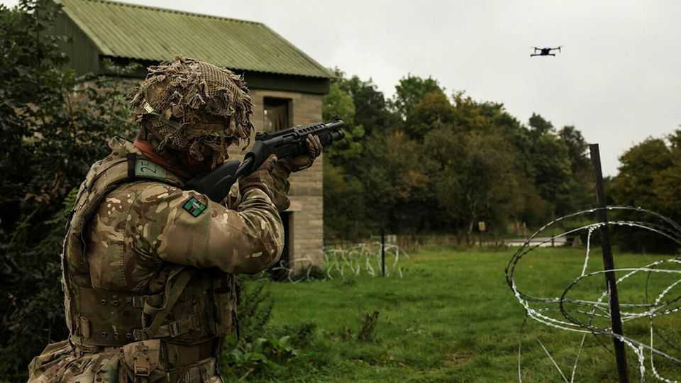

Attack drones, meet Britain’s crack clay-pigeon shooters
An old hobby trains soldiers for a new type of warfare

Oct 15th 2026
It was a bad day to be a clay pigeon. On a misty morning in Wiltshire, British soldiers gathered for their annual shooting championship. Around 100 shot at 100 targets each—a massacre. Shotguns boomed, and neat clay discs were blasted into bright bursts of colour.
Clay-pigeon shooting was born in the late 1800s to help hunters improve their aim. In the second world war it was used to train fighter pilots. Today Peter Meager, boss of the army’s clay-target shooting team, hopes it can help prepare soldiers for drone warfare. “I think there are huge transferable skills,” he says.
Such skills are needed. Drones are behind 80% of the enemy targets Ukraine destroys. In June Britain’s Defence Investment Plan committed £750m ($950m) to counter-drone protection. Futuristic solutions include acoustic radars and direct-energy weapons.
Victorian ones might help, too. Shotguns are great for hitting aerial targets because their shells contain many projectiles, which spread out in the air. That makes it easier to catch a bird’s wing or a quadcopter’s propeller. But the army trains soldiers to shoot rifles instead.
The two are very different, says Ben Cookson, one of the army’s crack shots. Rifle shooting is about “being as still as possible”. You get in position, aim, breathe in and fire. “If you do that with a shotgun you’re doomed.” Hitting an airborne target means moving with it and judging how far ahead of it to aim. When rifle shooters come to Mr Cookson for tutoring, “we have to completely retrain them”, he says.
Clay-pigeon shooting is a good place to start. Launchers built to mimic the flight patterns of different birds can feasibly simulate those of drones, too. Most can fire clays at a drone-like speed of 50mph, and some at over 100mph.
And so, after Ukrainians told British instructors how useful shotguns were on the front line, the army started using clays to develop soldiers’ proficiency with them. But a shotgun should only ever be “a last resort”, says Mr Meager. A drone within range of one is already too close—much better to down it earlier.
Plenty of questions still hover over shotguns’ use as an anti-drone defence. Spotting the things is hard. In Wiltshire some shooters don tinted goggles to make the orange clays pop. Might whizzier versions help identify a distant, fast-moving quadcopter? Can standard lead shells take down armoured military drones? How widely should the shot be spread when targeting an incoming one?
These are questions for the nerds. At the army’s tournament the focus was on technique: the top score was 94 out of 100. Your correspondent, while not quite managing that, did at least avoid embarrassing himself in front of the troops (”a natural”, said Mr Cookson, a kind man). Spirits were high. But one cloud hanging over the day had little to do with the rain. “I hate drones,” sighs Mr Meager.■